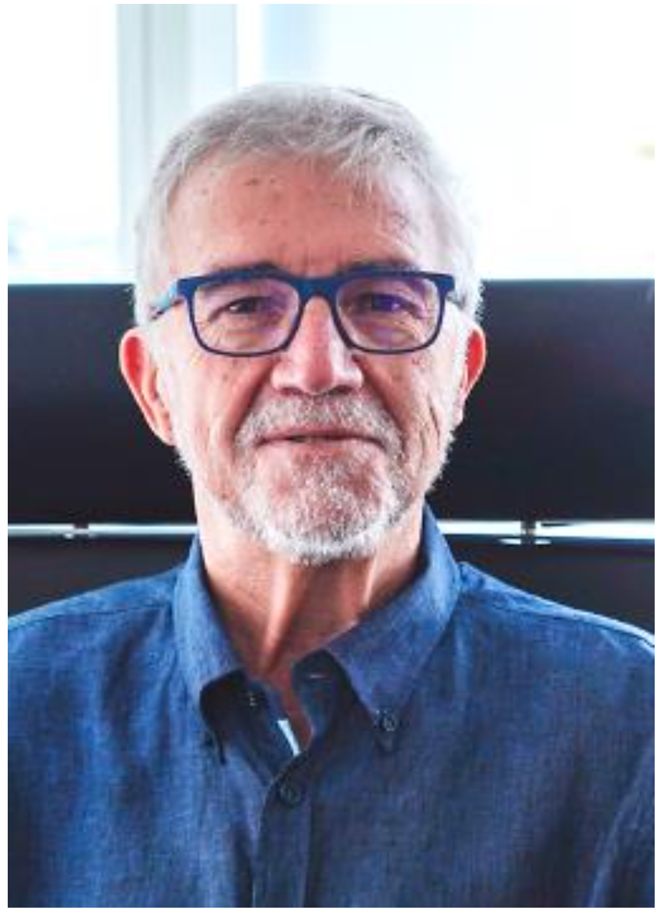
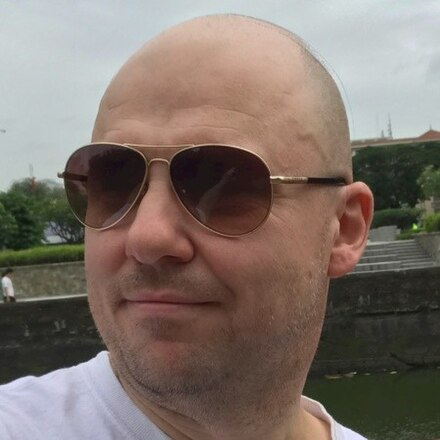

ICS 2024: International Conference on Supercomputing
June 4-7, 2024
International Conference Hall, Kyoto University, Kyoto, Japan

Program
- List of papers to be presented at ICS 2024
- [ICS 2024's proceedings URL]
- The proceedings will be open access during the conference and for up to one month after the conference. We hope you will take a look at the papers that interest you and engage in active discussions with the presenters.
- The proceedings will be open access during the conference and for up to one month after the conference. We hope you will take a look at the papers that interest you and engage in active discussions with the presenters.
June 4th (Tue), 2024
NOTICE
The workshops will be held in the International Science Innovation Building (Buildings numbered 69). The locations of the workshops and the registration desk are both DIFFERENT from those of the main conference. More details are available here.| Room 1 Conference Rooms 5a/5b (5th floor) |
Room 2 Meeting Rooms E/F (5th floor) |
|
|---|---|---|
| 12:30 - 17:00 | Registration (The registration desk is at Conference Room 1 on the 1st floor of the International Science Innovation Building.) |
|
| 13:00 - 15:00 |
|
|
| 15:00 - 15:30 | Coffee break | |
| 15:30 - 17:30 |
|
|
June 5th (Wed), 2024
NOTICE
From June 5th, the registration desk will be located at entrance of the International Conference Hall, 2nd floor, Clock Tower Centennial Hall (Buildings numbered 3). ICS 2024 Day 1:| Room A International Conference Hall (2nd floor) |
Room B International Conference Hall (2nd floor) |
|
|---|---|---|
| 12:00 - 18:30 | Registration (The registration desk is at entrance of the International Conference Hall, 2nd floor, Clock Tower Centennial Hall.) |
|
| 13:00 - 13:20 |
General Co-chairs: Valentina Salapura (Google), Prof. Kenji Kise (Tokyo Institute of Technology)
Steering Committee Chair: Prof. Alex Veidenbaum (University of California Irvine)
Program Co-chairs: Prof. Murali Annavaram (University of Southern California), Prof. Ana Lucia Varbanescu (University of Twente)
|
|
| 13:20 - 14:20 |
Chair: Hironori Nakajo (Tokyo University of Agriculture and Technology)

Prof. Mateo Valero (Director at Barcelona Supercomputing Center - Centro Nacional de Supercomputación)
Title: European Supercomputers: Buy versus Build
|
|
| 14:20 - 14:40 | Coffee break | |
| 14:40 - 16:20(Each talk: max. 15 min presentation / 5 min Q&A) |
Chair: Murali Annavaram (University of Southern California), Ana Lucia Varbanescu (University of Twente)
|
|
| 16:20 - 16:40 | Coffee break | |
| 16:40 - 18:00(Each talk: max. 15 min presentation / 5 min Q&A) |
Chair: Y.C. Tay (National University of Singapore)
|
Chair: Mehmet Belviranli (Colorado School of Mines)
|
| 18:00 - 18:30 | Break | |
| 18:30 - 20:20 |
The reception will be held on the evening of June 5th to welcome all attendees with drinks and light refreshments.
|
|
June 6th (Thu), 2024
ICS 2024 Day 2:
| Room A International Conference Hall (2nd floor) |
Room B International Conference Hall (2nd floor) |
|
|---|---|---|
| 08:15 - 13:00 |
The four-hour morning excursion on June 6th will take you to Kiyomizu-dera Temple and Nanzen-ji Temple in several
chartered vehicles. Please be at the bus pick-up area on time. It is easy to find your way from Exit 6 of Gion-Shijo Station.
After visiting these temples, we will have lunch at Okazaki Saryo Mameda near Heian Shrine. It is important to note that the number of lunches provided is limited. We, the organizing committee, estimate that we will be able to serve lunch to all participants, but depending on the number of participants, it may not be possible to serve lunch to everyone. In this case, we will serve lunch in the order in which you complete the online registration. We are sorry and hope you will understand. |
|
| 12:50 - 17:30 | Registration (The registration desk is at entrance of the International Conference Hall, 2nd floor, Clock Tower Centennial Hall.) |
|
| 13:00 - 14:00 |
Chair: Kenji Kise (Tokyo Institute of Technology)
 Naoki Shinjo (SVP, Head of Advanced Technology Development Unit Fujitsu Research FUJITSU LIMITED)
Title: From Past to Future: The Legacy and Hypothesis of Supercomputing
Naoki Shinjo (SVP, Head of Advanced Technology Development Unit Fujitsu Research FUJITSU LIMITED)
Title: From Past to Future: The Legacy and Hypothesis of Supercomputing
|
|
| 14:00 - 14:20 | Coffee break | |
| 14:20 - 15:40(Each talk: max. 15 min presentation / 5 min Q&A) |
Chair: Marco Minutoli (Pacific Northwest National Laboratory)
|
Chair: Jun Yang (University of Pittsburgh)
|
| 15:40 - 16:00 | Coffee break | |
| 16:00 - 17:20(Each talk: max. 15 min presentation / 5 min Q&A) |
Chair: Ryohei Kobayashi (University of Tsukuba)
|
Chair: Saday Sadayappan (University of Utah)
|
| 18:30 - 21:00 |
The banquet will be held on the evening of June 6th at the HEIAN JINGU SHRINE Restaurant & Banquet Hall, which will
offer traditional Japanese course meals that incorporate classic Japanese cooking techniques and feature local
ingredients from Kyoto.
This banquet has no specific dress code, so you don't need to dress up in formal attire. Feel free to attend and enjoy Kyoto's culinary delights and networking.
It is important to note that the number of seats for the banquet is limited. We,
the organizing committee, estimate that you will all be able to attend the banquet, but depending on the number of attendees, it may not be possible. In this case, we will provide the seat in the order in which you complete the online
registration. We are sorry and hope
you will understand.
|
|
{kind=link}
June 7th (Fri), 2024
ICS 2024 Day 3:
| Room A International Conference Hall (2nd floor) |
Room B International Conference Hall (2nd floor) |
|
|---|---|---|
| 09:15 - 13:30 | Registration (The registration desk is at entrance of the International Conference Hall, 2nd floor, Clock Tower Centennial Hall.) |
|
| 09:30 - 10:30 |
Chair: Kiyofumi Tanaka (JAIST)

Dr. Michael Gschwind (Director / Principal Engineer for PyTorch at Meta Platforms)
Title: LLMs Everywhere: Acceleration from Servers to Mobile Devices in the Age of Generative AI
|
|
| 10:30 - 10:50 | Coffee break | |
| 10:50 - 12:10(Each talk: max. 15 min presentation / 5 min Q&A) |
Chair: Jens Domke (RIKEN R-CCS)
|
Chair: Satoshi Ohshima (Kyushu University)
|
| 12:10 - 13:30 | Lunch | |
| 13:30 - 14:50(Each talk: max. 15 min presentation / 5 min Q&A) |
Chair: Youtao Zhang (University of Pittsburgh)
|
Chair: Miquel Pericàs (Chalmers University of Technology)
|